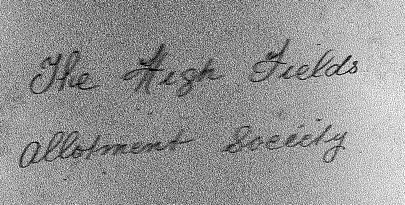
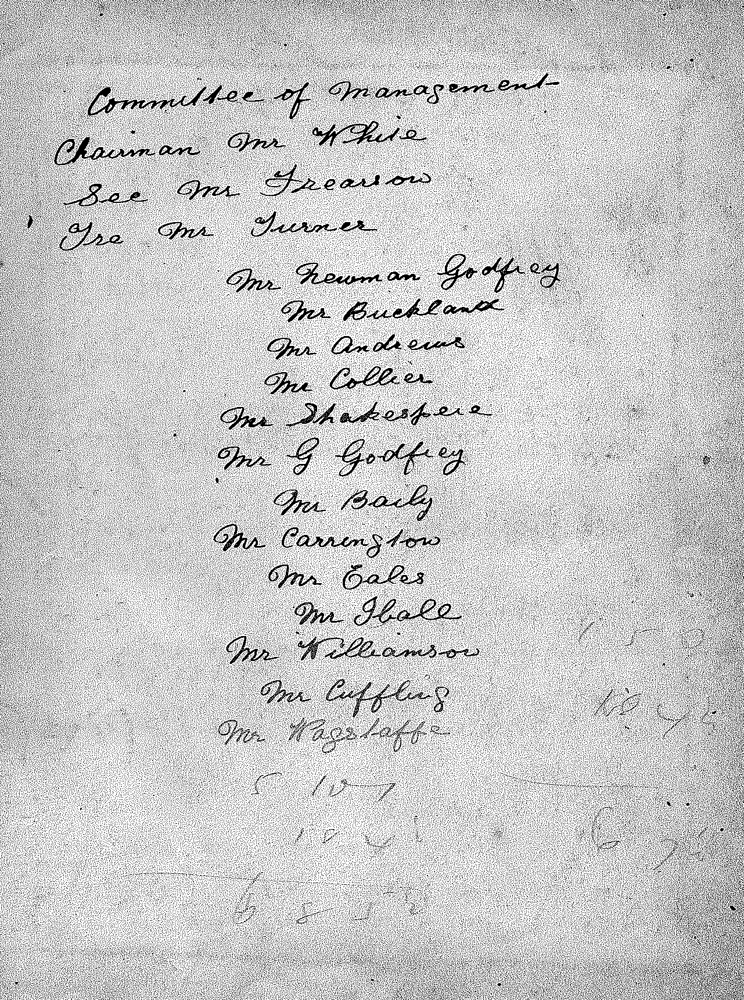
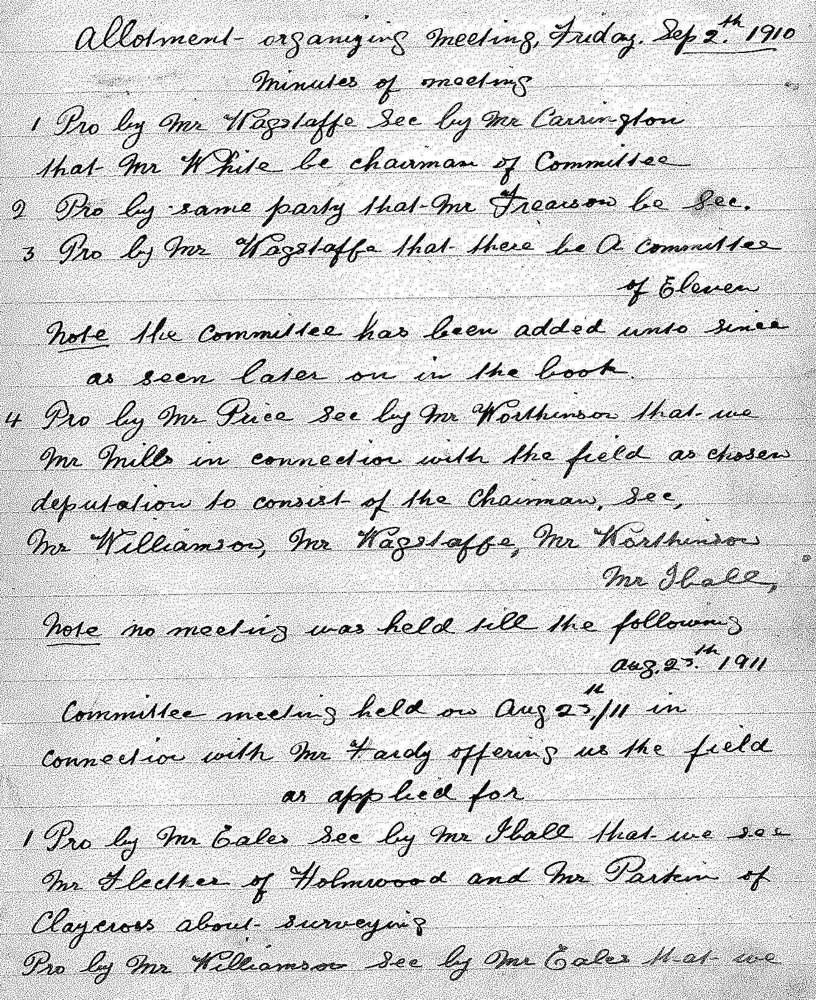

History
The Highfields Allotment Society Ltd was founded on 2nd September 1910 when a group of local gentlemen held an ‘Allotment Organising Meeting’ to discuss the purchasing of land.
This land was bought for £320.00.
In 1920 the Society was registered with the Financial Conduct Authority under the 'Industrial and Provident Societies Act' which has since changed to 'Co-operative and Community Benefit Societies Act 2014'.
The Society is wholly owned by members and shareholders and run by a Management Committee voted for at the Annual General Meetings.

